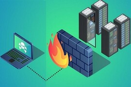

INTRODUCCION
Durante esta presentacion explicaremos los temas vistos en clase durante este semestre se mostraran conceptos basicos, temas de importancia entre mas cosas a continuacion iniciaremos con la presentacion
ETAPA UNO
Principios básicos de la seguridad informática
Seguridad informatica como cualquier medida que impida la ejecucion de operaciones no autorizadas sobre un sistema o una red informatica cuyos efectos pueden con llevar daños sobre la informacion que es confidencial.
El sistema de gestion de la seguridad de la informacion (SGSI) se define como aquella parte del sistema general de gestion que comprende la politica, la estructura organizativa, los procedimientos, los recursos necesarios para emplear la gestion.
La seguridad informática es el conjunto de tecnologías, procesos y prácticas diseñadas para la protección de redes, dispositivos, programas y datos en caso de algún ciberataque, hackeo, daño o acceso no autorizado.
Para proteger toda la información de una organización, tanto de valor personal como empresarial, se hace necesario aplicar los cuatro principios de la seguridad informática: confidencialidad, integridad, disponibilidad y autenticidad.
ETAPA DOS
Aspectos legales de la Seguridad Informática
Derecho a la privacidad los datos personales no se deben divulgar, poner a disposición de terceros ni utilizar para otros fines, excepto con el consentimiento de la persona o cuando lo autorice la ley garantías de seguridad.
Proteccion de datos personales la privacidad de la información es la relación entre la recopilación y difusión de datos, la tecnología, la expectativa pública de privacidad.
Delitos informaticos define al Delito informático como, la realización de una acción que, reuniendo las características que delimitan el concepto de delito, sea llevada a cabo utilizando un elemento informático y/o telemático
Normas ISO son un conjunto de estándares con reconocimiento internacional que fueron creados con el objetivo de ayudar a las empresas a establecer unos niveles de homogeneidad en relación con la gestión

ETAPA TRES
Problemas en seguridad en las redes y sistemas informáticos
Los problemas de seguridad en redes y sistemas informáticos abarcan diversas amenazas, como ataques de malware, phishing, vulnerabilidades de software, y accesos no autorizados. La gestión inadecuada de contraseñas, la falta de actualizaciones de seguridad y la insuficiente conciencia sobre ciberseguridad son factores que contribuyen a estos riesgos
La protección de datos sensibles y la implementación de medidas de seguridad, como firewalls y cifrado, son fundamentales para mitigar estas amenazas y garantizar la integridad y confidencialidad de la información.
Algunos tipos de virus y programas dañinos que existen son los siguientes: troyanos, gusanos, Adware, Keylogger, Rootkit, Virus polimorfico, Virus de ocultacion, etc
ETAPA CUATRO
Identificación de usuarios, sistemas biométricos y criptografía
Los usuarios, en el contexto de la informática y la tecnología, son individuos o entidades que interactúan con sistemas, aplicaciones y dispositivos. Pueden acceder a información, realizar operaciones y utilizar recursos tecnológicos
La autenticación es un proceso de verificación de la identidad de un usuario, dispositivo o sistema para garantizar que solo aquellos con credenciales válidas puedan acceder a recursos protegidos. Se basa en la presentación exitosa de información de autenticación, como contraseñas, huellas dactilares o certificados digitales
El registro de usuarios es el proceso mediante el cual los individuos crean cuentas o perfiles en sistemas, plataformas o servicios en línea. Este proceso generalmente implica proporcionar información personal, como nombres de usuario, contraseñas y datos de contacto.
Los datos biométricos son información específica y medible relacionada con características físicas o comportamentales únicas de un individuo. Estos datos incluyen huellas dactilares, escaneos de retina, reconocimiento facial, voz y patrones de comportamiento.